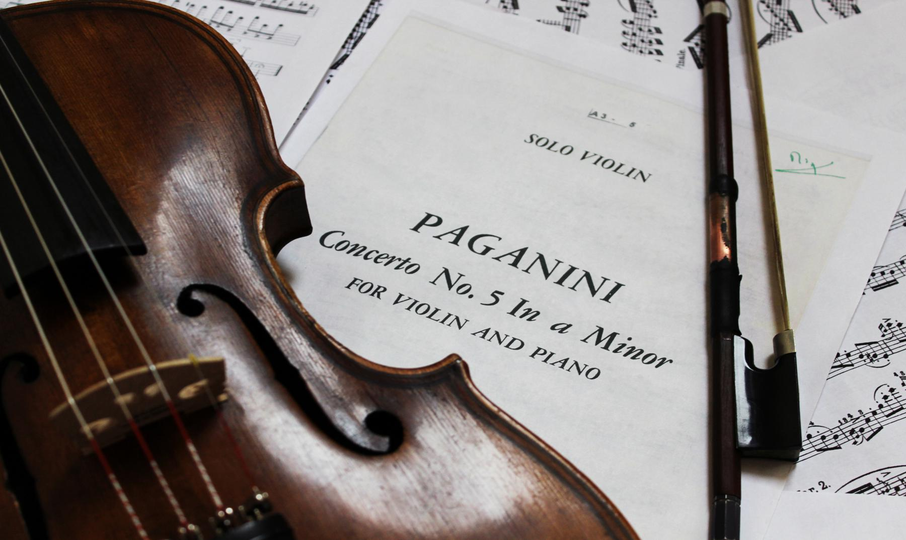

CARRERA DE PAGANINI

En 1828 viajó a Viena y dio 14 conciertos, donde debutó marcando un antes y un después en su carrera. Siguió preparando conciertos y en 1829 y 1831 se reunió con Goethe, Heine y Schumann. Paganini tuvo gran influencia sobre estos artistas, quienes vieron inspiración en él. Después empezó a viajar por Inglaterra, pero ya empezaba a sentir demasiado la fama y el coste de las entradas era muy elevado, excesivo, por lo que el público estaba descontento. Aun así la gente hacía todo lo posible por verle tocar, pues aparte de ser un violinista prodigioso, tenía una forma muy peculiar de tocar por su conformación biológica especial y por su tal distinta manera de interpretar la música. Estos fueron los conciertos que realmente marcaron su carrera, después de viajar a Inglaterra ya era un supremo del violín y siguió viajando por toda Europa. Compuso obras, sonatas y conciertos para violín y guitarra principalmente. Sus composiciones abarcan todos los niveles, desde iniciación (como La danza de las brujas) o al máximo virtuosismo (los 24 caprichos). Sus obras más importantes son: los conciertos para violín N°1 y Nº3 en re mayor, Opus 6, el Concierto N°2 en si menor, Opus 7 «La campanella» y sus caprichos. Estos últimos inspiraron a compositores como Liszt, Brahms y Rachmaninov.